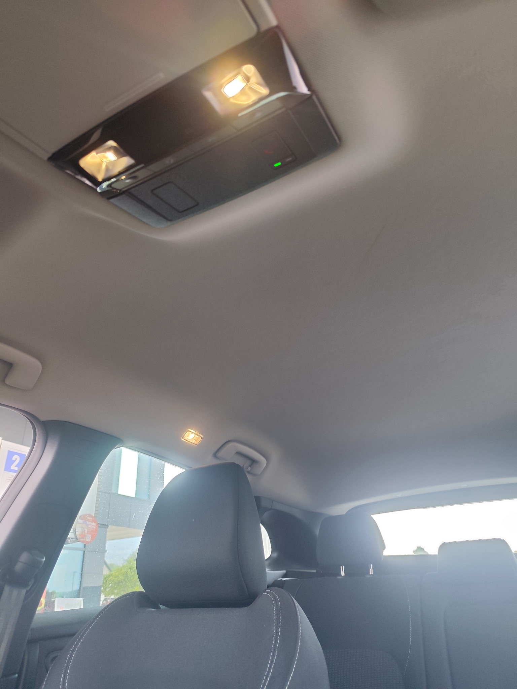
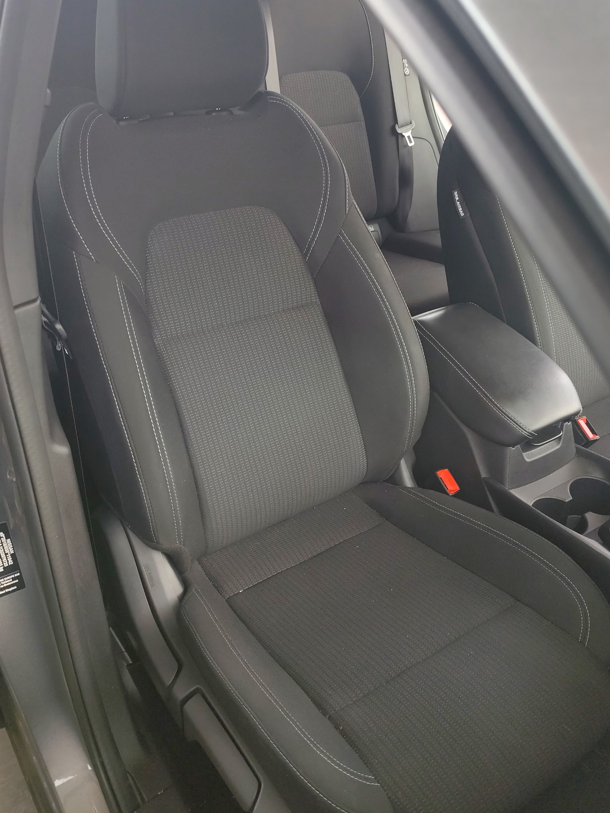
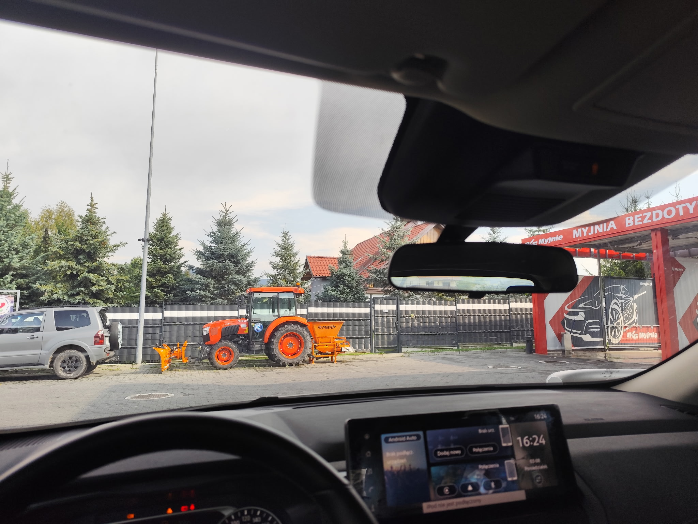
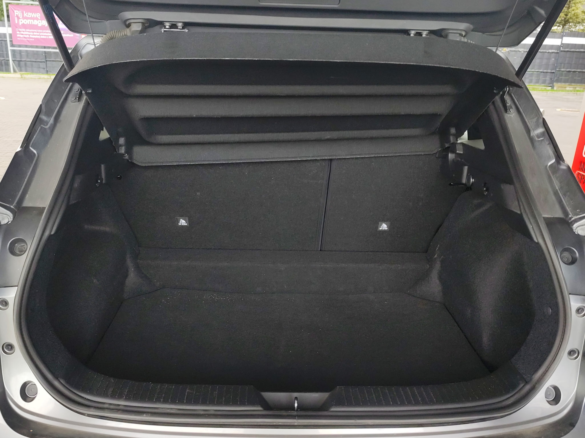
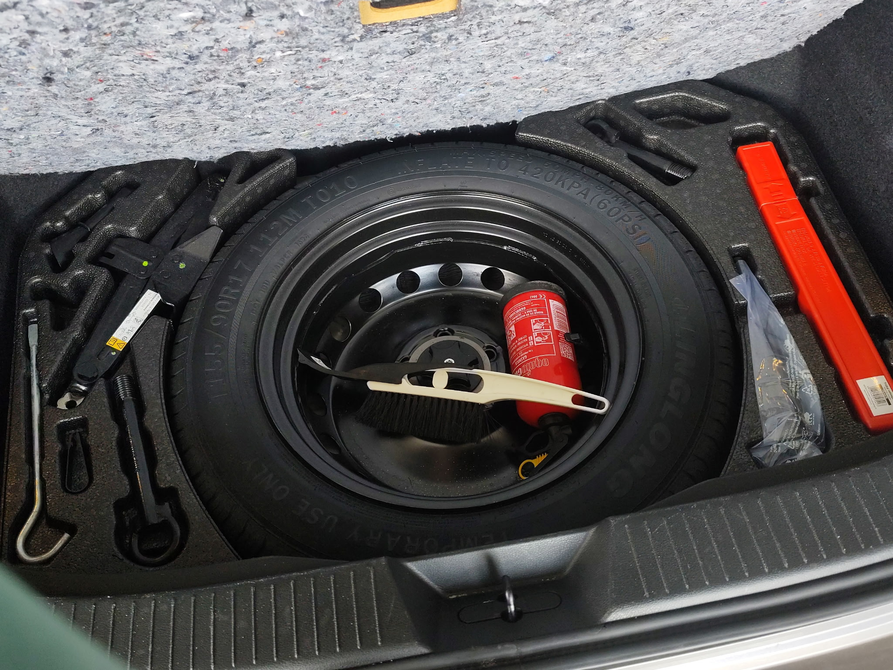

0. What the module is for
The AI editor must write Word comments: pass/fail per requirement, with facts it can cite (odometer, gearbox warning, camera pose). It does not look at pixels. CV does.
CV is a separate service. It does not live inside the editor. Cropping is out of scope. The job today is:
If the client writes a different manifest tomorrow, the look-for list changes. We do not hardcode “11 kinds of car photo.”
1. Inputs
A. The client’s manifest (messy, real)
fixtures/fleet-vehicle-return/manifest.txt —
Polish, typos, a qualifier six lines away from the item it modifies.
16 zdjęć, Pod maską 4x fotele i 2 przekatne pojazdu 2x podsufitka, Pod maską, Przednia szyba że środka i zewnątrz Bieżnik opony zdjęcie bagażnika + wyposażenia pod klapą i zegary Podsufitka trzeba spomiędzy forteli zrobić
Line 4 asks for two headliner photos. Line 10 (not next to it) says they must be shot from between the seats (forteli is a typo for foteli).
B. The photo dump
17 files as delivered. Two pairs are byte-identical copies, so there are only 15 distinct pictures. The client said they wanted 16.
2. Pipeline (what the code does, in order)
- Read
manifest.txt. Parse it with Vertex intoParsedManifest(Pydantic). Noexpected_requirements.yaml— that file is not an input. Look-fors come only from the client text. - Hash every file (sha256). Collapse duplicates. The model never sees two copies of the same boot photo as two photos. That is not vision — it is ingest.
- For each unique image, call Vertex
gemini-2.5-flashwith: the pixels + a prompt that lists this manifest’s requirements + structured output schemaImageLabel(not “please return JSON”). - Validate the model output as Pydantic:
requirement_ids,constraint_ok,odometer_km,warnings, plate, pose evidence. - Write
cv/inventory.generated.yaml. - Eval against golden
review.yaml: did we tag the right files with the right R-ids, and for constrained shots isconstraint_okright?
Auth is Application Default Credentials on project linen-badge-507111-r6.
No API keys (org policy).
3. After parse: ten look-fors
This table is the input to vision, not a universal car ontology. Change the manifest, change this table.
| Id | Need | What the client meant | Extra rule? |
|---|---|---|---|
| R-01 | 2 | Engine bay, bonnet open (Pod maską twice → 2) | — |
| R-02 | 4 | Seats | — |
| R-03 | 2 | Vehicle on the diagonal | — |
| R-04 | 2 | Headliner | from between the front seats |
| R-05 | 1 | Windscreen from inside | — |
| R-06 | 1 | Windscreen from outside | — |
| R-07 | 1 | Tyre tread | — |
| R-08 | 1 | Boot | — |
| R-09 | 1 | Kit under the boot floor | — |
| R-10 | 1 | Instrument cluster | — |
Sum of counts = 16, matching “16 zdjęć”. We only have 15 unique files — already R-01 will be short one engine-bay shot.
4. Two questions per photo (this is the whole trick)
requirement_ids: [R-04]
constraint_ok: true | false
Getting Q1 right is “this is a headliner.” Getting Q2 right is “was the camera between the seats?” Counting two headliner files answers Q1 twice and never asks Q2.
5. Case study — R-04 (the 45/46 miss)
Both pictures below are the roof of the same car. Only one was taken the way the client demanded.

1000040420.jpgLook: two front headrests at the bottom, overhead console in the middle, lining running back to the rear window. Camera is in the aisle between the seats.
.jpg)
IMG_20260830_132755 (5).jpgLook: grab handles, one dome light, one headrest at the edge, only the rear stretch of lining. Shot from the side/rear of a seat — not from the aisle.
Eval said: this file is an R-04 photo (subject correct) but
constraint_ok must be false.
The model set it true and invented pose evidence
(“from between the front seats”). That is the single failed check: 45/46.
A Word comment for R-04 should therefore fail, even though two headliner pictures exist:
[R-04] fail Uzasadnienie: Two headliner photos were supplied. Only 1000040420.jpg is taken from between the front seats (both headrests + overhead console). IMG_20260830_132755 (5).jpg shows the lining from beside a seat. Sugestia: Retake the second shot from the aisle between the front seats, looking up. Źródło: manifest line 4 + line 10 → R-04
If we had left a hardcoded enum shot_from: beside_seat in the schema,
we would be teaching the model a pose menu invented for this fixture.
A new manifest will not say “beside_seat”; it will say whatever the client typed.
constraint_ok is that judgement applied to this manifest’s words.
This run shows Q2 is still weak.
6. Cite-able facts (what comments should quote)
Not just labels — typed fields the editor can paste.
.jpg)
odometer_km: 59650 and the Polish
gearbox warning (service immediately). That belongs in the comment, and
also as an unprompted condition note (the manifest did not ask for faults).
.jpg)
WN 7020U is readable — used in the vehicle table,
and a privacy issue if the repo goes public.
7. The rest of this run (subject tagging)
Unique files after sha256. Dupes of boot and under-floor kit are collapsed, not shown twice.
.jpg)

.jpg)
.jpg)
.jpg)
.jpg)

.jpg)
.jpg)


8. Scoreboard
| Requirement | Need | What happened | Should the form pass it? |
|---|---|---|---|
| R-01 engine | 2 (on paper) | CV found 1 file — and that is correct: there is only one engine-bay photo in the dump (132754 (4)). Nothing was missed. | fail because the manifest asked for two (Pod maską twice, so the total can be 16). Photographer delivered one. |
| R-02–R-03, R-05–R-10 | — | Subject tags matched golden | pass |
| R-04 headliner | 2 + pose | 2 photos tagged R-04; pose on (5) marked OK by the model | fail golden; model would wrongly pass |
Eval: 45/46. The pipeline shape is correct. The remaining work is making Q2 (constraint) as reliable as Q1 (subject) — without putting this fixture’s pose names back into the schema.
Code: cv/generate_inventory.py, cv/schema.py.
Latest dump: cv/inventory.generated.yaml.
Golden: fixtures/fleet-vehicle-return/.
Open this file from the repo so the images resolve
(cv/case-analysis.html).